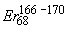

|
В. И. ЕЛИСЕЕВ ВВЕДЕНИЕ В МЕТОДЫ ТЕОРИИ
ФУНКЦИЙ ПРОСТРАНСТВЕННОГО КОМПЛЕКСНОГО ПЕРЕМЕННОГО |
|
Продолжение 2 из 5
6.2. Возбужденное состояние ядер с позиции структуры пространства на малых линейных расстояниях. Расчет электронного и позитронного распада ядер. Условия электронного и позитронного распада ядер с позиции пространственной структуры.
Этот ряд периодической таблицы изотопов заканчивается ядрами, у которых энергия связи на один нуклон максимальна и максимальна величина обменного кванта на один нуклон. С этого момента эти величины начинают снижаться в пределах тех же закономерностей для стабильных изотопов.
Пятый ряд четвертого периода.
|
2,98-3,19 |
8,73-8,78 |
127,78-128,11 |
|
|
3,23-3,33 |
8,74-8,75 |
127,79-127,89 |
|
|
3,27-3,54 |
8,76-8,72 |
127,94-127,64 |
|
|
3,5 |
8,74 |
127,84 |
|
|
3,45-3,8 |
8,73-8,67 |
127,75-127,33 |
|
|
3,69-3,77 |
8,73-8,72 |
127,73-127,65 |
|
|
3,63-3,99 |
8,66-8,68 |
127,21-127,38 |
Пятый ряд четвертого периода заканчивается элементом криптона , в котором сформировано 4-ре циклонных вихря . Магическое число 82 содержится в трех последних изотопах. Это магическое число нуклонов 82 характеризует стабильные ядра конкретного заряда. Это число нуклонов содержится и в узловом изотопе, в котором наряду с полностью сформированными  туннеля сформированы и электронные оболочки атома.
туннеля сформированы и электронные оболочки атома.
Еще раз подчеркнем, что этот случай подтверждает, что введение  -туннелей более корректно отражает структуру атомных ядер.
-туннелей более корректно отражает структуру атомных ядер.
Условия сохраняются.
Цепочка радиоактивного распада идет с соблюдением установленных ранее условий.
Рассмотрим изменение параметров для изотопов 6 –ого рядя 5-ого периода.
|
|
|||
|
3,91-4,1 |
8,7-8,7 |
127,51-127,54 |
|
|
4,13 |
8,68 |
127,4 |
|
|
4,18-4,5 |
8,6-8,68 |
127,39-127,79 |
|
|
4,31 |
8,66 |
127,21 |
|
|
4,35-4,53 |
8,65-8,64 |
127,15-127,12 |
|
|
4,32-4,38 |
8,58-8,61 |
126,64-126,85 |
|
|
4,41-4,71 |
8,58-8,62 |
126,66-126,94 |
|
|
4,74 |
8,6 |
126,77 |
|
|
4,68-4,88 |
8,57-8,59 |
126,58-126,72 |
Шестой ряд пятого периода закрывается изотопом , для которого
.В этом ряду в некоторых изотопах содержится магическое число 50. Однако это число характеризует устойчивость конкретного ядра. Для построения оболочечной модели в общем плане периодической таблице оно не корректно.
Структурный анализ N-мерного пространства для шестого ряда давал Z=45, при n=10.
Структурный анализ для 7-ого ряда 5-ого периода дает Z=55 при n=11.
|
|
|||
|
4,84-5,16 |
8,53-8,54 |
126,25-126,33 |
|
|
5,25 |
8,52 |
126,23 |
|
|
5,25-5,45 |
8,52-8,49 |
126,2-126 |
Магическое число протонов 50 нельзя обосновать как условие для обоснования модели ядра.
|
5,49-5,57 |
8,48-8,46 |
125,92-125,77 |
|
|
5,45-5,76 |
8,48-8,42 |
125,94-125,44 |
|
|
5,73 |
8,44 |
125,59 |
|
|
5,69 |
8,44 |
125,6 |
Изотоп индия с магическим числом 126 попадает в стабильные, однако для обобщенной оболочечной модели он также не подходит.
|
5,6-5,99 |
8,45-8,37 |
125,65-125,07 |
Ряд периодической таблицы заканчивается ядром ксенона с шестью циклонными туннелями. Структурный анализ давал сдвиг по заряду ядра до Z=55.
|
5,96 |
8,39 |
125,25 |
Максимум  для этого изотопа сдвинут в сторону меньшего числа нейтронов в ядре.
для этого изотопа сдвинут в сторону меньшего числа нейтронов в ядре.
Условия  распадов соблюдаются и для этого ряда.
распадов соблюдаются и для этого ряда.


Восьмой ряд шестого периода заканчивается элементом платина . По структурному анализу заряд ядра отвечает измерению пространства . Заряд этого элемента превышает заряд ядра ксенона, который закрывает предыдущий ряд периодической таблицы на 24 единицы. В связи с этим существует структура с числом измерений
.. Это число отвечает заряду ядра элемента Диспрозия. Таким образом,
седьмой и восьмой  -туннели удерживают элементы восьмого ряда шестого периода.
-туннели удерживают элементы восьмого ряда шестого периода.
|
|
8,4-8,35 |
|
|
|
6,15-6,19 |
8,35-8,34 |
124,93-124,9 |
|
|
6,24 |
8,35 |
124,92 |
|
|
6,27 |
8,33 |
124,81 |
|
|
6,31-6,47 |
8,32-8,3 |
124,76-124,57 |
|
|
6,42 |
8,3 |
124,55 |
|
|
|
6,37-6,75 |
8,29-8,23 |
124,47-124,04 |
|
6,64-6,72 |
8,25-8,24 |
124,22-124,13 |
|
|
6,76-6,97 |
8,24-8,18 |
124,09-123,67 |
|
|
6,94 |
8,19 |
123,79 |
|
|
7,01-7,11 |
8,18-8,16 |
123,66-123,49 |
Седьмой  - туннель ядра Диспрозия рассчитан в соответствии с ранее вычисленными величинами количества
- туннель ядра Диспрозия рассчитан в соответствии с ранее вычисленными величинами количества  - туннелей на основе пространственных систем координат.
- туннелей на основе пространственных систем координат.
Рассмотрим процессы распада.
Условия распада соблюдены.
< 6. 39 < 6. 41 < 6. 42 < 6. 42
< 124. 24 < 124. 44 < 124. 55 < 124. 59
Условия распада соблюдаются для всей цепочки распада.
Рассматриваем восьмой  -туннель.
-туннель.
|
6,84-6,92 |
|
123,66 |
|
|
 |
7,19-7,32 |
8,14-8,11 |
123,4-123,12 |
|
|
7,29 |
8,12 |
123,19 |
|
7,40-7,53 |
8,10-8,06 |
123,04-122,76 |
|
|
7,49 |
8,07 |
122,83 |
|
|
7,53-7,67 |
8,06-8,03 |
122,79-122,55 |
|
|
7,7 |
8,02 |
122,48 |
|
|
7,73 |
8,02 |
122,44 |
|
|
7,83-7,89 |
7,99-7,97 |
122,23-122,12 |
|
|
7,86-8,06 |
7,98-7,94 |
122,17-121,83 |
|
|
8,02-8,09 |
7,94-7,93 |
121,88-121,76 |
|
|
8,06-8,25 |
7,93-7,89 |
121,82-121,47 |
Для этого ряда ядер проверяем условие распада.
8, 23 < 8. 25
 121. 36 < 121. 47 Условия распада выполняются.
121. 36 < 121. 47 Условия распада выполняются.
Условие распада выполняются.
Рассмотрим девятый ряд шестого периода.
По структурному исследованию ряд должен закончиться ядром с зарядом Z=91. .
|
8,18 |
7,9-7,84 |
121,54-121,11 |
|
|
8,4-8,7 |
7,85-7,83 |
121,17-121,05 |
|
|
8,47-8,56 |
7,83-7,81 |
121,01-120,89 |
|
|
8,59 |
7,8 |
120,81 |
|
|
8,58 |
7,8 |
120,78 |
Мини оглавление:
[0], [1.1.1, 1.1.2, 1.1.3, 1.1.4, 1.1.5, 1.1.6, 1.1.7, 1.1.8, 1.2, 1.2.1, 1.2.2, 1.2.2.a, 1.2.2.b, 1.2.2.c, 1.2.2.d, 1.2.2.e, 1.2.2.f, 1.2.2.g, 1.2.2.h, 1.2.3, 1.3.1, 1.3.2, 1.3.3, 1.3.4, 1.3.5, 1.3.6, 1.4.1, 1.4.2, 1.5, 1.6, 1.7.1, 1.7.2, 1.7.3.1, 1.7.3.2, 1.7.3.3, 1.7.4.1, 1.7.4.2, 1.8.1], [2.1, 2.2],[3.1, 3.2, 3.3, 3.4.1, 3.4.2, 3.4.3, 3.4.4, 3.4.5],[4.1, 4.2, 4.3, 4.4],[5.1, 5.1.Рис.52, 5.2, 5.3, 5.4, 5.4.Т1, 5.4.Т2, 5.4.Т3, 5.5.1, 5.5.2, 5.5.3, 5.5.4],[6.1.1, 6.1.2, 6.2.1, 6.2.2, 6.2.3, 6.2.4, 6.2.5, 6.3, 6.4.1, 6.4.2, 6.5.1, 6.5.2],[7.1, 7.2, 7.3, 7.4, 7.5, 7.6, 7.7.1, 7.7.2, 7.8.1, 7.8.2, 7.8.3, 7.9],[8.1, 8.2.1, 8.2.2, 8.3, 8.4, 8.5, 8.6, 8.6.T1, 8.7, 8.8.1, 8.8.2, 8.8.3, 8.9.1, 8.9.2, 8.9.3, 8.10, 8.10.T2, 8.10.T3],[9.1, 9.2, 9.3, Рис.88, 89, 90, 91, 92, 93, 94, 95, 96, 97, 98, 99, 100],[10.1, 10.2, 10.3, 10.4, 10.5, 10.6, 10.7, 10.8, 10.9, 10.10, 10.11, 10.12, 10.13, 10.14, 10.15.1, 10.15.2, 10.16.1, 10.16.2, 10.17, 10.18],[11]
Размещенный материал является электронной версией книги: © В.И.Елисеев, "Введение в методы теории функций пространственного комплексного переменного", изданной Центром научно-технического творчества молодежи Алгоритм. - М.:, НИАТ. - 1990. Шифр Д7-90/83308. в каталоге Государственной публичной научно-технической библиотеки. Сайт действует с 10 августа 1998.
E-mail: mathsru@gmail.com